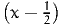
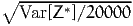

Report TRANSP-OR 150806
Transport and Mobility Laboratory
School of Architecture, Civil and Environmental Engineering
Ecole Polytechnique Fédérale de Lausanne
transp-or.epfl.ch
Series on Biogeme
The package PythonBiogeme (biogeme.epfl.ch) is designed to estimate the parameters of various models using maximum likelihood estimation. It is particularly designed for discrete choice models. In this document, we investigate some aspects related to Monte-Carlo integration, which is particularly useful when estimating mixtures choice models, as well as choice models with latent variables. We assume that the reader is already familiar with discrete choice models, with PythonBiogeme, and with simulation methods, although a short summary is provided. This document has been written using PythonBiogeme 2.4, but should remain valid for future versions.
Monte-Carlo integration consists in approximating an integral with the sum of a large number of terms. It comes from the definition of the expectation of a continuous random variable. Consider the random variable X with probability density function (pdf) fX(x). Assuming that X can take any value in the interval [a,b], where a ∈ℝ ∪ {-∞} and b ∈ℝ ∪ {+∞}, the expected value of X is given by
|
| (1) |
Also, if g : ℝ → ℝ is a function, then
|
| (2) |
The expectation of a random variable can be approximated using simulation. The idea is simple: generate a sample of realizations of X, that is generate R draws xr, r = 1,…,R from X, and calculate the sample mean:
|
| (3) |
Putting (2) and (3) together, we obtain an approximation to the integral:
|
| (4) |
Also, we have
|
| (5) |
Therefore, the procedure to calculate the following integral
|
| (6) |
is the following
|
| (7) |
In order to obtain an estimate of the approximation error, we must calculate the variance the random variable. The sample variance is an unbiased estimate of the true variance:
|
| (8) |
Alternatively as
|
| (9) |
the variance can be approximated by simulation as well:
|
| (10) |
Note that, for the values of R that we are using in this document, dividing by R or by R - 1 does not make much difference in practice. The approximation error is then estimated as
|
| (11) |
We refer the reader to Ross (2012) for a comprehensive introduction to simulation methods.
There are many algorithms to draw from various distributions. All of them require at some point draws from the uniform distribution. There are several techniques that generate such uniform draws. In PythonBiogeme, one of them must be selected by setting the parameter RandomDistribution.
Each programming language provides a routine to draw a random number between 0 and 1. Such routines are deterministic, but the sequences of numbers that they generate share many properties with sequences of random numbers. Therefore, they are often called “pseudo random numbers”.
Researchers have proposed to use other types of sequences to perform Monte-Carlo integration, called “quasi-random sequences” or “low-discrepancy sequences”. PythonBiogeme implements the Halton draws, from Halton (1960). They have been reported to perform well for discrete choice models (Train, 2000, Bhat, 2001, Bhat, 2003, Sándor and Train, 2004).
The third method to generate uniform random numbers implemented in PythonBiogeme is called “Modified Latin Hypercube Sampling”, and has been proposed by Hess et al. (2006).
In the following, we are using these three options, and compare the accuracy of the corresponding Monte-Carlo integration.
We first illustrate the method on a simple integral. Consider
|
| (12) |
In this case, it can be solved analytically:
|
| (13) |
In order to use Monte-Carlo integration, we consider the random variable X that is uniformly distributed on [0,1], so that
|
| (14) |
Therefore, we can approximate I by generating R draws from X and
|
| (15) |
Moreover, as
|
| (16) |
the standard error is 0.0034787613 for R = 20000, and 0.0011000809 for R = 200000. These theoretical values are estimated also below using PythonBiogeme.
We use PythonBiogeme to calculate (15). Note that PythonBiogeme requires a data file, which is not necessary in this simplistic case. We use the simulation mode of PythonBiogeme. It generates output for each row of the data file. In our case, we just need one output, so that we take any data file, and exclude all rows of the file except the first one, using the following syntax:
For this specific example, the data included in the file are irrelevant. The generation of draws in PythonBiogeme is performed using the command bioDraws(’U’), where the argument ’U’ provides the name of the random variable associated with the draws. The distribution of the random variable is specified using the following syntax:
Note that the valid keywords are
The integrand is defined by the following statement:
and the Monte-Carlo integration is obtained as follows:
The number of draws is defined by the parameter NbrOfDraws:
We calculate as well the simulated variance, using (10):
and the standard error (11):
Also, as we know the true value of the integral
we can calculate the error:
The calculation is obtained using the following statements:
We obtain the following results:
| Simulated Integral | 1. | 72007 |
| Analytical Integral | 1. | 71828 |
| Sample variance | 0. | 240135 |
| Std Error | 0. | 00346508 |
| Error | 0. | 00178739 |
Remember that the true variance is 0.2420356075, and the true standard error is 0.0034787613. If we use ten times more draws, that is 200,000 draws, we obtain a more precise value:
| Simulated Integral | 1. | 71902 |
| Analytical Integral | 1. | 71828 |
| Sample variance | 0. | 24175 |
| Std Error | 0. | 00109943 |
| Error | 0. | 000739329 |
Remember that the true variance is 0.2420356075, and the true standard error is 0.0011000809. The complete specification file for PythonBiogeme is available in Appendix A.1.
There are several techniques to reduce the variance of the draws used for the Monte-Carlo integration. Reducing the variance improves the precision of the approximation for the same number of draws. Equivalently, they allow to use less draws to achieve the same precision. We introduce two of them in this document: antithetic draws, and control variates. As the focus of this document is on PythonBiogeme, we urge the reader to read an introduction to variance reduction methods in simulation, for instance in Ross (2012).
Instead of drawing from X, consider two random variables X1 and X2, identically distributed with pdf fX = fX1 = fX2, and define a new random variable
|
| (17) |
Then, as E[Y] = E[X1] = E[X2] = E[X], we can rewrite (1) as follows:
|
| (18) |
The variance of this quantity is
|
| (19) |
If X1 and X2 are independent, this variance is equal to
|
| (20) |
Therefore, using Y for Monte-Carlo integration is associated with a variance divided by two, but requires twice more draws (R draws for X1 and R draws for X2). It has no advantage on drawing directly R draws from X. Formally, we can compare the standard errors of the two methods for the same number of draws. Drawing 2R draws from X, we obtain the following standard error:
|
| (21) |
Drawing R draws from X1 and R draws from X2 to generate R draws from Y, we obtain the same standard error
|
| (22) |
However, if the variables X1 and X2 happen to be negatively correlated, that is if Cov(X1,X2) < 0, then Var[Y] < Var[X]∕2, and drawing from Y reduces the standard error. For instance, if X1 is uniformly distributed on [0,1], then X2 = 1 - X1 is also uniformly distributed on [0,1], and
|
| (23) |
If X1 has a standard normal distribution, that is such that E[X1] = 0 and Var[X1] = 1, then X2 = -X1 has also a standard normal distribution, and is negatively correlated with X1, as
|
| (24) |
The other advantage of this method is that we can recycle the draws. Once we have generated the draws xr from X1, the draws from X2 are obtained using 1 - xr and -xr, respectively.
Now, we have to be careful when this technique is used for the general case (2). Indeed, it must be verified first that g(X1) and g(X2) are indeed negatively correlated. And it is not guaranteed by the fact that X1 and X2 are negatively correlated. Consider two examples.
First, consider g(X) = 2. Applying the antithetic method with
|
| (25) |
does not work, as
|
| (26) |
Actually, applying the antithetic method would increase the variance here, which is not desirable.
Second, consider g(X) = eX, as in the example presented in Section 3. We apply the antithetic method using
|
| (27) |
Here, the two transformed random variables are negatively correlated:
|
| (28) |
Therefore, the variance of Y given by (19) is 0.0039124969, as opposed to 0.2420356075∕2 = 0.1210178037 if the two sets of draws were independent. It means that for 10000 draws from Y, the standard error decreases from 0.0034787613 down to 0.0006254996. Moreover, as we use recycled draws, we need only 10000 draws instead of 20000.
To apply this technique in PythonBiogeme, the integrand is defined as follows:
and the number of draws reduced to 10000:
We obtain the following results:
| Simulated Integral | 1. | 71708 |
| Analytical Integral | 1. | 71828 |
| Sample variance | 0. | 00380337 |
| Std Error | 0. | 000616715 |
| Error | -0. | 00120542 |
The reader can compare these values with the theoretical derivation presented above. The complete specification file for PythonBiogeme is available in Appendix A.2.
The control variate method reduces the variance by exploiting information from another random variable, correlated with g(X), with a known mean. Consider the random variable Y such that E[Y] = μ. We define a new random variable Z as follows:
|
| (29) |
where c ∈ℝ is a parameter. By construction, E[Z] = E[g(X)] for any c, so that draws from Z can be used instead of draws from g(X) for Monte-Carlo integration. Note that we do not need any assumption on g here. The idea is to identify the value of c that minimizes the variance of Z. We have
|
| (30) |
which is minimized for
|
| (31) |
Therefore, we use for Monte-Carlo integration the random variable
|
| (32) |
with variance
|
| (33) |
Note that, as for antithetic draws, this technique exploits the correlation between two random variables. If Y is independent from g(X), no variance reduction is achieved.
In our example, g(X) = eX. If we select Y = X, we know that
|
| (34) |
Moreover,
|
| (35) |
Therefore, we obtain
|
| (36) |
and the variance of Z* is 0.0039402229, which is much lower than the variance of x, that is 0.2420356075. It means that, for 20000 draws, the standard error is 0.0004438594, as opposed to 0.0034787613. With this method, only 326 draws are sufficient to achieve the same precision as the Monte-Carlo integration without control variate. Indeed,
|
| (37) |
This is a tremendous saving. The control variate method is invoked in PythonBiogeme using the following statement:
where the second argument bioDraws(’U’) is Y, and the third, 0.5, is μ. Note that, in addition to the output requested by the user, PythonBiogeme also generates a report containing statistics on g(X), Y and Z*. In particular, it reports both the simulated value of Y and μ to detect any implementation error.
The results of the Monte-Carlo integration are:
| Simulated Integral (E[Z*]) | 1. | 71759 |
| Simulated Integral (E[X]) | 1. | 72007 |
| Analytical Integral | 1. | 71828 |
| Sample variance (Var[X]) | 0. | 239849 |
| Std Error () | 0. | 000440564 |
| Error | -0. | 00069233 |
The complete specification file for PythonBiogeme is available in Appendix A.3.
Finally, we present in Table 1 the results of the three methods, using different types of uniform draws as described in Section 2. For each technique, the standard errors for the three types of draws are comparable, with the antithetic draws achieving the best value, followed by the control variate. However, the precision actually achieved is much better for Halton, and even more for MLHS.
| Pseudo | Halton | MHLS | ||||
| Monte-Carlo | 1. | 71902 | 1. | 71814 | 1. | 71829 |
| Standard error | 0. | 00109943 | 0. | 00109999 | 0. | 00110009 |
| Actual error | 0. | 000739329 | -0. | 000145885 | 9. | 38555e-06 |
| Antithetic | 1. | 71708 | 1. | 71828 | 1. | 71828 |
| Standard error | 0. | 000616715 | 0. | 000625455 | 0. | 0006255 |
| Actual error | -0. | 00120542 | -2. | 27865e-06 | -6. | 13416e-10 |
| Control variate | 1. | 71759 | 1. | 71828 | 1. | 71828 |
| Standard error | 0. | 000440564 | 0. | 000443827 | 0. | 000443872 |
| Actual error | -0. | 00069233 | -2. | 84647e-06 | 1. | 52591e-07 |
We encourage the reader to perform similar tests for other simple integrals. For instance,
|
| (38) |
or
|
| (39) |
where ε > 0. Note that the domain of integration is not [0,1].
Consider an individual n, a choice set  n, and an alternative i ∈n. The
probability to choose i is given by the choice model:
n, and an alternative i ∈n. The
probability to choose i is given by the choice model:
|
| (40) |
where x is a vector of explanatory variables and θ is a vector of parameters to be
estimated from data. In the random utility framework, a utility function is defined
for each individual n and each alternative i ∈n:
 | (41) |
where Vin(x,θ) is deterministic and εin is a random variable independent from x. The model is then written:
|
| (42) |
Specific models are obtained from assumptions about the distribution of εin. Namely, if εin are i.i.d. (across both i and n) extreme value distributed, we obtain the logit model:
 | (43) |
Mixtures of logit are obtained when some of the parameters θ are distributed instead of being fixed. Denote θ = (θf,θd), where θf is the vector of fixed parameters, while θd is the vector of distributed parameters, so that the choice model, conditional on θd, is
|
| (44) |
A distribution is to be assumed for θd. We denote the pdf of this distribution by fθd(ξ;γ), where γ contains the parameters of the distribution. Parameters γ are sometimes called the deep parameters of the model. Therefore, the choice model becomes:
|
| (45) |
where θf and γ must be estimated from data. The above integral has no analytical
solution, even when the kernel Pn(i|x,θf,ξ,n) is a logit model. Therefore, it must
be calculated with numerical integration or Monte-Carlo integration. We
do both here to investigate the precision of the variants of Monte-Carlo
integration.
We consider the Swissmetro example (Bierlaire et al., 2001). The data file is available from biogeme.epfl.ch. Consider the following specification:
The parameter B_TIME is the mean of B_TIME_RND, and B_TIME_S2 is its variance. Note that B_TIME_S is not the standard deviation, and can be positive of negative.
n, characterized by the availability conditions:
As there is only one random parameter, the model (45) can be calculated using numerical integration. It is done in PythonBiogeme using the following procedure:
Make sure that the library distributions is loaded in order to use the function normalpdf, using the following statement:
The complete specification file for PythonBiogeme is available in Appendix A.4. The value of the choice model for first observation in the data file is
|
| (46) |
Note that, in order ot obtain so many significant digits, we have used the following statement:
To calculate the same integral with Monte-Carlo integration, we use the same syntax as described earlier in this document:
The complete specification file for PythonBiogeme is available in Appendix A.5. Using the result of the numerical integration as the “true” value of the integral, We obtain the following results:
| Simulated integral | 0. | 637263 |
| Numerical integration | 0. | 63785 |
| Sample variance | 0. | 0299885 |
| Std Error | 0. | 000387224 |
| Error | -0. | 000586483 |
We now apply the variance reduction methods. The antithetic draws described in Section 4.1 are generated as follows:
The complete specification file for PythonBiogeme is available in Appendix A.6.
The control variate method, described in Section 4.2, requires an output of the simulation such that the analytical integral is known. We propose here to consider
|
| (47) |
if ∂Vin(x,θf,ξ)∕∂ξ does not depend on ξ. This integral is calculated by Monte-Carlo after recycling the uniform draws used to generate the normal draws for the original integration. We follow the following procedure:
Note that the derivative with respect to UNIFDRAW is
The complete specification file for PythonBiogeme is available in Appendix A.7.
Table 2 provides the results of the Monte-Carlo integration using different variance reduction methods (none, antithetic and control variates), different uniform draws (pseudo, Halton and MLHS), and different number of draws.
We can observe the following:
It would be useful to perform the same experiment for some other observations in the data file. Such experiments can give useful insights to for the choice of the most appropriate integration technique. In the following, we compare some of these techniques for the maximum likelihood estimation of the parameters of the model.
| Draws | Pseudo | Halton | MHLS | ||||
| Monte-Carlo | 20000 | 0. | 637263 | 0. | 637923 | 0. | 637845 |
| Standard error | 0. | 000387224 | 0. | 000390176 | 0. | 000390301 | |
| Actual error | -0. | 000586483 | 7. | 35443e-05 | -5. | 08236e-06 | |
| Antithetic | 10000 | 0. | 638383 | 0. | 637856 | 0. | 63785 |
| Standard error | 5. | 13243e-05 | 5. | 24484e-05 | 5. | 24949e-05 | |
| Actual error | 0. | 000533174 | 6. | 1286e-06 | 1. | 96217e-07 | |
| Control variate | 20000 | 0. | 6377 | 0. | 637871 | 0. | 637848 |
| Standard error | 0. | 000176759 | 0. | 000179054 | 0. | 00017928 | |
| Actual error | -0. | 000149889 | 2. | 127e-05 | -1. | 72413e-06 | |
| Antithetic | 1000 | 0. | 638783 | 0. | 637965 | 0. | 637853 |
| Standard error | 5. | 05914e-05 | 5. | 17454e-05 | 5. | 24619e-05 | |
| Actual error | 0. | 000933592 | 0. | 000114998 | 3. | 32666e-06 | |
| Control variate | 2000 | 0. | 637876 | 0. | 637975 | 0. | 637835 |
| Standard error | 0. | 000551831 | 0. | 00056032 | 0. | 000567009 | |
| Actual error | 2. | 66122e-05 | 0. | 000125218 | -1. | 50796e-05 | |
| Antithetic | 250 | 0. | 639205 | 0. | 638459 | 0. | 637869 |
| Standard error | 5. | 17638e-05 | 4. | 97379e-05 | 5. | 23141e-05 | |
| Actual error | 0. | 00135483 | 0. | 000609069 | 1. | 87082e-05 | |
| Control variate | 500 | 0. | 637587 | 0. | 638158 | 0. | 637798 |
| Standard error | 0. | 00111188 | 0. | 00109022 | 0. | 00113287 | |
| Actual error | -0. | 000262395 | 0. | 000308626 | -5. | 2274e-05 | |
We now estimate the parameters of the model using all observations in the data set associated with work trips. Observations such that the dependent variable CHOICE is 0 are also removed.
The estimation using numerical integration is performed using the following statements:
The complete specification file for PythonBiogeme is available in Appendix A.8.
For Monte-Carlo integration, we use the following statements:
where the statement l = mixedloglikelihood(prob) is equivalent to
The complete specification file for PythonBiogeme is available in Appendix A.9.
The following estimation results are presented:
The final log likelihood in each case, as well as the estimation time are summarized in Table 3. In this experiment, when looking at the estimates, it seems that the MLHS draws provide relatively good precision, even for a lower number of draws, and with no variance reduction. Clearly, this result cannot be generalized, and should be investigated on a case by case basis. Note however that the default type of draws in PythonBiogeme is MLHS, because it is performing particularly well in this example.
| Method | Draws | Log likelihood | Run time | |
| Numerical | — | -5214.879 | 02:37 | |
| Monte-Carlo | 2000 | -5214.835 | 31:11 | |
| Antithetic | 1000 | -5214.899 | 39:26 | |
| Control variate | 2000 | -5214.835 | 42:11 | |
| Monte-Carlo | 500 | -5214.940 | 09:26 | |
| Antithetic | 250 | -5214.897 | 09:21 | |
| Control variate | 500 | -5214.940 | 08:59 | |
|
|||||||||||||||||||||||||||||||||||||||||||||||||||||||||||||||||||||||||||||||||||||||||||||||||
|
|||||||||||||||||||||||||||||||||||||||||||||||||||||||||||||||||||||||||||||||||||||||||||||||||
|
|||||||||||||||||||||||||||||||||||||||||||||||||||||||||||||||||||||||||||||||||||||||||||||||||
|
|||||||||||||||||||||||||||||||||||||||||||||||||||||||||||||||||||||||||||||||||||||||||||||||||
|
|||||||||||||||||||||||||||||||||||||||||||||||||||||||||||||||||||||||||||||||||||||||||||||||||
|
|||||||||||||||||||||||||||||||||||||||||||||||||||||||||||||||||||||||||||||||||||||||||||||||||
|
|||||||||||||||||||||||||||||||||||||||||||||||||||||||||||||||||||||||||||||||||||||||||||||||||
|
|||||||||||||||||||||||||||||||||||||||||||||||||||||||||||||||||||||||||||||||||||||||||||||||||
|
|||||||||||||||||||||||||||||||||||||||||||||||||||||||||||||||||||||||||||||||||||||||||||||||||
|
|||||||||||||||||||||||||||||||||||||||||||||||||||||||||||||||||||||||||||||||||||||||||||||||||
|
|||||||||||||||||||||||||||||||||||||||||||||||||||||||||||||||||||||||||||||||||||||||||||||||||
|
|||||||||||||||||||||||||||||||||||||||||||||||||||||||||||||||||||||||||||||||||||||||||||||||||
|
|||||||||||||||||||||||||||||||||||||||||||||||||||||||||||||||||||||||||||||||||||||||||||||||||
|
|||||||||||||||||||||||||||||||||||||||||||||||||||||||||||||||||||||||||||||||||||||||||||||||||
This document describes the variants of Monte-Carlo integration, and suggests how to perform some analysis using the SIMULATE operator of PythonBiogeme, that helps investigating the performance of each of them before starting a maximum likelihod estimation, that may take a while to converge. In the example provided in this document, the antithetic draws method, combined with MLHS appeared to be the most precise. This result is not universal. The analysis must be performed on a case by case basis.
Bhat, C. (2001). Quasi-random maximum simulated likelihood estimation of the mixed multinomial logit model, Transportation Research Part B 35: 677–693.
Bhat, C. R. (2003). Simulation estimation of mixed discrete
choice models using randomized and scrambled halton sequences,
Transportation Research Part B: Methodological 37(9): 837 – 855.
http://www.sciencedirect.com/science/article/pii/S0191261502000905
Bierlaire, M., Axhausen, K. and Abay, G. (2001). The acceptance of modal innovation: The case of swissmetro, Proceedings of the Swiss Transport Research Conference, Ascona, Switzerland.
Halton, J. H. (1960). On the efficiency of certain quasi-random
sequences of points in evaluating multi-dimensional integrals,
Numerische Mathematik 2(1): 84–90.
http://dx.doi.org/10.1007/BF01386213
Hess, S., Train, K. and Polak, J. (2006). On the use of modified latin hypercube sampling (MLHS) method in the estimation of mixed logit model for vehicle choice, Transportation Research Part B 40(2): 147–163.
Ross, S. (2012). Simulation, fifth edition edn, Academic Press.
http://books.google.ch/books?id=sZjDT6MQGF4C
Sándor, Z. and Train, K. (2004). Quasi-random simulation of discrete choice models, Transportation Research Part B: Methodological 38(4): 313 – 327.
Train, K. (2000). Halton sequences for mixed logit, Technical Report E00-278, Department of Economics, University of California, Berkeley.